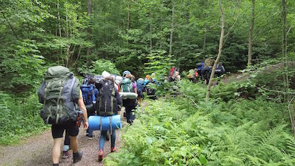
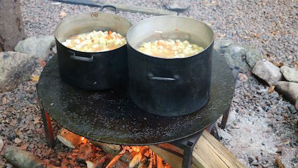
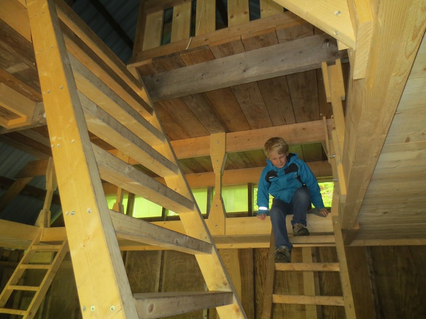
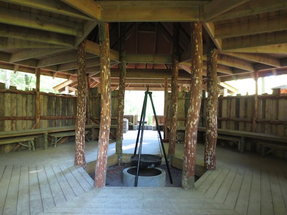
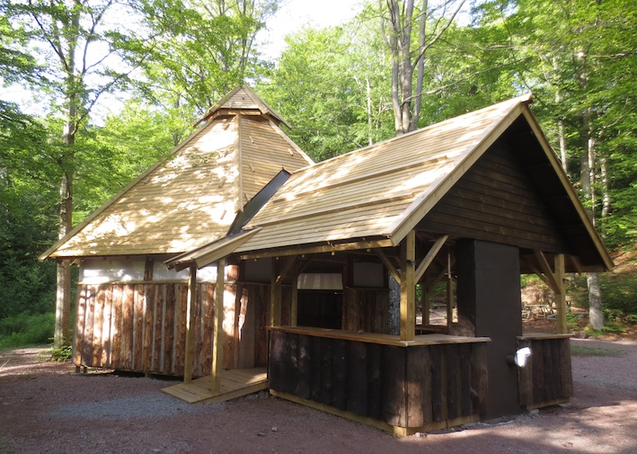
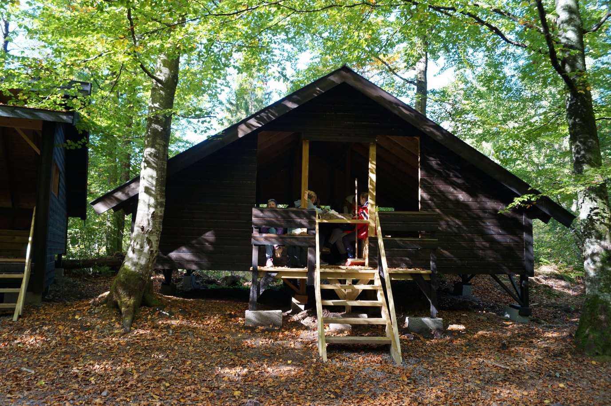

Godt gjemt inne i Bøkeskogen i Stokke, vest for E-18, ligger Bøketunet på Aarholt. Etter en kort gåtur på ca. 500 meter fra gården er du framme.


Når du kommer hit kan du oppdage at du reiser tilbake i tid, for i Bøketunet lages mat på ved ute i et godt utstyrt kjøkken som lyses opp av dagslys. Strøm og innlagt vann hadde man jo ikke før.
Når kvelden kommer blir det godt å legge seg til å sove i en av gapahukene. Alle med gulv, tak og 3 vegger, men ingen dør. På den måten sover du både ute og inne samtidig. Og alle lyder fra skogen har du rett ved der du sover. Ett av husene kalles Kråkeslottet, og ligner også ett.....

I godvær er det godt å sitte rundt bålplassen ute, og i annet vær finnes en god bålplass inne i "Sekskanten"......


PRIS OG BESTILLING.
For leie av sted: kr 3.900,- pr. døgn
kr 5.900,- for helg (fred. 16.00 - søndag 16.00)
Bøketunet har soveplasser til ca. 50 personer.
Ved og vann på dunker er inkludert i prisen.

Klassetur ?
Send mail til:
klassetur@aarholt-tunet.no
Oppgi:
Kontaktperson. Gruppe / skole. Alder / klassetrinn. Antall personer.
Når ønsket opphold. Hva dere ellers lurer på.
SPØRSMÅL og SVAR:
- Må vi ha med egen mat?
Ja. Det er lurt å planlegge som om dere skulle bodd i skauen; ha med mat som ikke krever kjøleskap.
Ta kontakt så hjelper vi til med menyforslag!
- Er det utedo?
Jepp!
- Hvor mange soveplasser er det?
Det er soveplasser til ca 60+ under tak. Det er fint plass til 2 store klasser, og i noen tilfeller et helt klassetrinn.
-Er det mobildekning i Bøketunet?
Nesten ikke. Likevel anbefaler vi at medfølgende voksne har mobil for å kunne ringe ved behov.
- Når kan vi komme?
Bøketunet kan leies fra februar til og med november. Desember og januar har vi vinterstengt.
- Er det aktiviteter på gården?
Ja, men prisen er uten aktiviteter. Vi oppfordrer dere til å forberede turen og lage deres egen plan for oppholdet. Dere kan også kontakte oss og få tilbud på aktivitetspakke. Da skreddersyr vi for dere og avtaler hva, hvor mye, hvordan og når. Og pris.
{kind=link}
{kind=link}
{kind=link}
{kind=link}